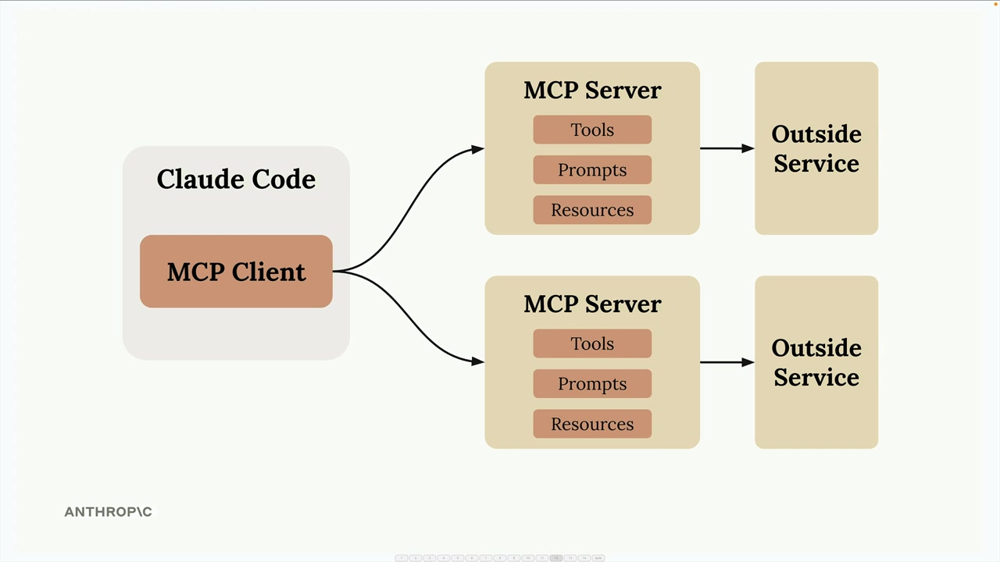
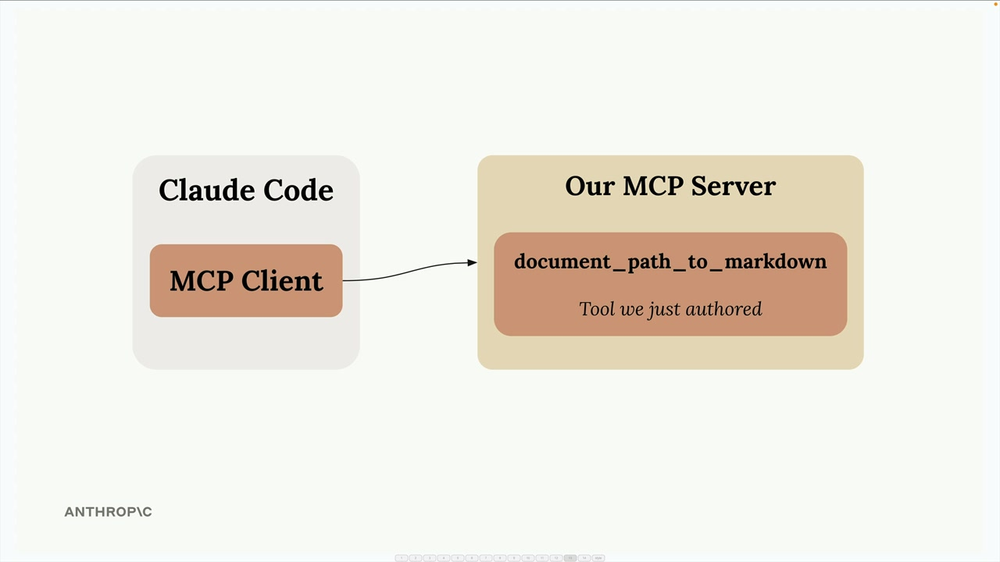
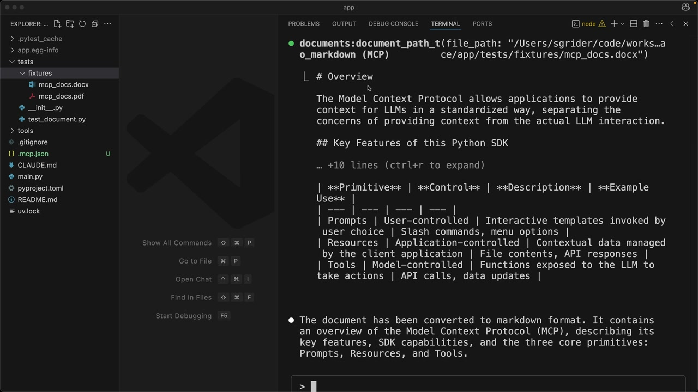
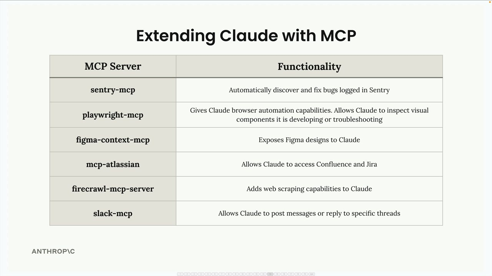

MCP-серверы в Claude Code
Чему научитесь
Видео 2:30 и текст урока
К концу урока вы сможете:
- подключить свой MCP-сервер к Claude Code командой
claude mcp add; - назвать популярные MCP-серверы для разработки;
- собрать рабочий процесс из нескольких MCP-серверов.
Видео и текст урока.
Смотреть урок на Skilljar Enhancements with MCP servers · 2:30В Claude Code встроен MCP-клиент, поэтому к нему можно подключать MCP-серверы и этим резко расширять возможности Claude. Это открывает очень мощные варианты настройки рабочего процесса разработки.
Как MCP расширяет Claude
Model Context Protocol позволяет Claude Code подключаться к внешним сервисам и инструментам через MCP-серверы. Вместо того чтобы ограничиваться встроенными возможностями Claude, можно добавить свою функциональность, подключив серверы с нужными инструментами, ресурсами или интеграциями.

Каждый MCP-сервер может давать Claude разные виды функциональности через три основных компонента: инструменты (Tools — для действий), промпты (Prompts — для шаблонов) и ресурсы (Resources — для доступа к данным).
Подключение MCP-сервера
Добавить MCP-сервер в Claude Code просто. Сервер регистрируется из командной строки:
claude mcp add [server-name] [command-to-start-server]
Например, если у вас есть сервер обработки документов, который запускается командой uv run main.py, выполните:
claude mcp add documents uv run main.py
После регистрации Claude Code будет автоматически подключаться к серверу при запуске.
Пример: обработка документов
Практический пример — инструмент, который позволяет Claude читать документы PDF и Word. Если сделать MCP-сервер с инструментом document_path_to_markdown, можно просить Claude переводить содержимое документов в формат Markdown.

document_path_to_markdown нашего MCP-сервера.Если попросить Claude «Convert the tests/fixtures/mcp_docs.docx file to markdown», он сам воспользуется вашим инструментом, прочитает документ и вернёт сконвертированное содержимое.

Популярные MCP-интеграции
В экосистеме MCP есть серверы для многих распространённых инструментов и сервисов разработки:

- sentry-mcp — находить и исправлять ошибки, залогированные в Sentry;
- playwright-mcp — даёт Claude автоматизацию браузера для тестирования и отладки;
- figma-context-mcp — открывает Claude доступ к макетам Figma;
- mcp-atlassian — даёт Claude доступ к Confluence и Jira;
- firecrawl-mcp-server — добавляет Claude сбор данных с веб-страниц (веб-скрейпинг);
- slack-mcp — позволяет Claude публиковать сообщения и отвечать в конкретных тредах.
Собираем свой рабочий процесс
Настоящая сила — в сочетании нескольких MCP-серверов под ваш конкретный процесс разработки. Например, можно подключить:
- сервер Sentry — получать подробности об ошибках в продакшене;
- сервер Jira — читать требования из задач;
- сервер Slack — сообщать команде, когда работа готова;
- собственные серверы для ваших внутренних инструментов и API.
Так получается среда разработки, где Claude свободно работает со всеми инструментами и сервисами, которыми вы уже пользуетесь, — и становится гораздо более мощным помощником, настроенным под ваш процесс.
Дальше
Раздел про приложения Anthropic пройден. Проверьте себя пробным экзаменом по Claude Code; официального квиза Skilljar у этого раздела нет. Следующий раздел — агенты и рабочие процессы (workflows).
Оригинал урока: Enhancements with MCP servers.